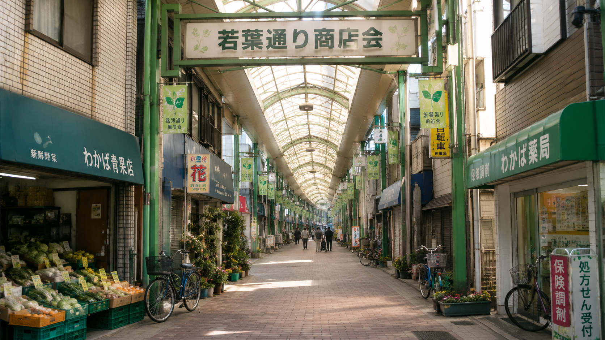

7月25日開催「若葉通り夏まつり」のご案内

街と人を、やさしくつなぐ。
いつもの買い物に、
少しの楽しさを。
春見野駅から歩いて5分。地域の皆さまに親しまれてきた、身近な商店街です。
NEWS
お知らせ
商店街一斉清掃を実施しました
七夕飾りの展示を開始しました
新規加盟店舗のお知らせ
防犯カメラ設備更新のお知らせ
ABOUT US
若葉通り商店会について
若葉通り商店会は、春見野駅周辺で暮らす皆さまの毎日を支える、 地域密着型の商店街です。
食料品、飲食、生活サービスなど、日々の暮らしに欠かせない店舗が集まり、 世代を問わず気軽に立ち寄れる場所づくりを続けています。
季節の催しや清掃活動、防犯活動などにも取り組み、 安心して歩ける商店街を目指しています。
- 設立
- 1987年4月
- 加盟店舗
- 32店舗
- 所在地
- 春見野駅東口 徒歩5分
- 主な活動
- 地域イベント・防犯・美化活動
MEMBER SHOPS
加盟店舗
お買い物からお食事、暮らしのサービスまで。地域に根ざした店舗が営業しています。
若葉鮮魚店
新鮮な魚介と手づくり惣菜を取りそろえています。
山口青果
旬の野菜と果物を毎朝仕入れています。
佐々木精肉店
国産肉を中心に、揚げ物やお弁当も販売しています。
カフェ Leaf
自家焙煎コーヒーと軽食を楽しめる喫茶店です。
フラワー若葉
季節の花束や贈答用アレンジメントを承ります。
ヘアーサロン M
ご家族で利用できる地域のヘアーサロンです。
小林時計店
腕時計の電池交換や修理もご相談ください。
たかはし文具
学用品から事務用品まで幅広く取り扱っています。
井上クリーニング
衣類から寝具まで丁寧に仕上げます。
中華 宝華
昔ながらの定食と麺類が人気の町中華です。
EVENT CALENDAR
イベント予定
| 開催日 | イベント | 会場 |
|---|---|---|
| 7月25日 | 若葉通り夏まつり | 商店街中央広場 |
| 8月3日 | 若葉夜市 | 商店街全域 |
| 8月18日 | 夏休みスタンプラリー | 加盟店舗 |
| 9月5日 | 地域合同防災訓練 | 東地区公民館前 |
ACCESS
アクセス
若葉通り商店会
春見野駅東口より徒歩5分
専用駐車場はありません。近隣の時間貸し駐車場をご利用ください。
春見野駅 東口
若葉通り商店会
徒歩 約5分